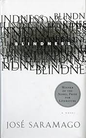

This summer, I took my first trip to Disney World in Orlando. Stepping into the park, I felt like I was entering a world of magic and childhood nostalgia. It made me feel like a kid again.
My favorite restaurant is Ravagh because they serve the best Persian foods in the US! I always visit here when I go to NYC.
My favorite food is Zereshk Polo. In English, it can be translated as Barberry Rice with chicken. I like it to be served with Shirazi salad. This dish is my favorite Persian food and is often served during gatherings. The tangy taste of barberries mixed with the saffron rice creates an unforgettable flavor. The chicken is tender and perfectly seasoned with saffron to complement the dish. It reminds me of my childhood.
| Cover | Author | Summary |
|---|---|---|
|
Paulo Coelho | A journey of self-discovery following a shepherd as he pursues his personal legend. |
| Rumi | An epic poem that explores the deeper meanings of love, faith, and the soul. | |
| Irvin Yalom | An exploration of existential psychology, focusing on human experiences of death, freedom, isolation, and meaning. | |
|  | José Saramago | A novel that explores the collapse of society after a sudden epidemic of blindness strikes. |